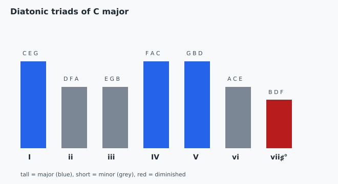

Track 2: Core toolkit
Why a song in one key keeps reaching for the same handful of chords, and how to name them all from the scale.

The four chords you loop on guitar for half the songs at a campfire, G, C, D, and Em, are not a random grab; they are the I, IV, V, and vi of G major, every one built only from G major's own notes.
A key is a small toolbox: the scale is the raw stock, and stacking thirds on each note stamps out seven ready chords whose shapes (major, minor, or the odd diminished one) are set by where the half steps fall.
Move from C major to A minor, its relative minor with the same notes, and the same seven chords stay, but the one that feels like "home" shifts from C (the I) to Am (now the i), so the toolbox is identical while the center of gravity moves.
Build a triad on each note of a major scale using only that scale's notes and the qualities come out in a fixed order. They are the same in every major key because they follow the scale's interval spacing, not the letters:
I ii iii IV V vi vii°: major, minor, minor, major, major, minor, diminished.
| Degree | In C major | Quality |
|---|---|---|
| I | C E G | major |
| ii | D F A | minor |
| iii | E G B | minor |
| IV | F A C | major |
| V | G B D | major |
| vi | A C E | minor |
| vii° | B D F | diminished |
Uppercase numerals are major, lowercase minor, and ° marks the diminished chord. No chord here needs a ♯ or ♭ in C major, because every note comes from the key. Concept reference: diatonic-chords (cited).
In C major the iii chord is E G B and comes out minor. Why minor and not major?
Chord quality comes from the size of the stacked thirds, and E–G is 3 semitones, a minor 3rd on the bottom, so the triad is minor. The lowercase numeral records that fact; it does not cause it. The "darker letter" answer is not a real rule.
When you put a capo on the 2nd fret to sing a song in your range, then play the same G-shape chords, you are transposing the whole diatonic set up a whole step into A major, and every chord keeps its numeral, the I still feels like home.
The "everything stays inside the key" picture stops the moment a song borrows a chord from outside, like a ♭VII (an F major chord in a song in G), which uses an F♮ that G major's key signature would otherwise sharp; that chord is not diatonic and the toolbox idea no longer covers it.
Why do songs in one key keep using the same few chords?
Stack a triad on every scale note, using only the scale's notes.
The scale, plus a triad built in thirds on each degree.
the major-key pattern is fixed: I ii iii IV V vi vii° = maj, min, min, maj, maj, min, dim
Build I and V in C.
A borrowed chord steps outside the seven.
A key gives you seven chords for free. You take the scale and build a three-note chord on each note, only using notes already in the scale. Because the scale's half steps sit in fixed places, the chords always come out major, minor, minor, major, major, minor, diminished, in that order. We label them I through vii°, big letters for major and small for minor. It breaks when a song borrows a chord from outside the key, like a ♭VII, which uses a note the key would not give you.
Write out all seven diatonic chords for G major by spelling each triad from the G scale, then label them I through vii° and check the diminished one lands on F♯.
Make a one-page diatonic chord chart for a key you sing in, derived from the scale, not copied.
W–W–H–W–W–W–H pattern; add any ♯ or ♭ it forces).You have it when your seven chords match the major/minor/diminished pattern exactly and the diminished chord sits on the 7th degree.
Push further: add the ♭VII borrowed chord, name the out-of-key note it introduces, and say why it is not in the seven.
| Row | Pass looks like |
|---|---|
| Derivation | chords are spelled from the scale, not memorized shapes |
| Pattern | qualities match maj/min/min/maj/maj/min/dim |
| Labeling | numerals use case and ° correctly |
Pass threshold: 6 of 7 chords correctly spelled and labeled.
Weak answer example: labeling every chord major because the open shapes "look the same," missing that ii, iii, vi are minor.
If you miss the pattern, do this first: recount the bottom third of each triad in semitones (3 = minor, 4 = major) before relabeling.
Find IV in C major. The 4th degree is F. Stack thirds in the scale: F, A, C. F–A is 4 semitones (major 3rd), A–C is 3, so IV is F major.
Find vi in C major. The 6th degree is ____. Triad: ____, ____, ____. Quality: ____. A; A, C, E; A–C is 3 semitones so minor; vi = A minor.
Spell the ii chord in G major. Model answer: 2nd degree is A; triad A, C, E; A–C is a minor 3rd, so ii = A minor.
A song in D major loops D – G – A – Bm and you want its numerals. Rubric: D = I, G = IV, A = V, Bm = vi. Full credit if each chord is matched to its scale degree and the vi is identified as minor.
The wrong belief: "All the chords in a key are major, because the key is 'C major.'" Why it tempts: the key name says "major," and the open guitar shapes feel similar under the fingers. Diagnostic case: play C then Dm; Dm is built from D F A, all in C major, yet it is minor. Repair move: remember only I, IV, V are major; ii, iii, vi are minor and vii° is diminished, set by each triad's bottom third.
Why are the I, IV, and V chords the major ones in any major key?
The half steps in a major scale land so that triads on degrees 1, 4, and 5 get a major 3rd on the bottom, making them major; it is forced by the scale, not a choice. The "louder" answer is not a real mechanism.
A friend says a song "is in C but uses an F major chord, so F must be the key." Why are they likely wrong?
F major is the diatonic IV of C, so it belongs to C without changing the key; the chord that feels like home decides the key, not every chord that appears. The "only in F major" answer ignores that one chord sits in several keys.
Which degree carries the single diminished chord in a major key?
Only the triad on the 7th degree stacks two minor 3rds, making it diminished (B D F in C major). The ii is minor and the IV is major, so neither is the diminished one.
Why does the same I–V–vi–IV progression work in any major key?
The diatonic pattern is fixed across major keys, so a progression written in numerals keeps its sound in any key. The "same four chords" answer is wrong; the letter names differ by key, only the roles match.
Take a song you play and rewrite its chords as Roman numerals in its key. Then transpose the numerals into a second key by re-deriving the diatonic chords there, and confirm the song still sounds like itself.
| Row | Pass looks like |
|---|---|
| Numerals | each chord mapped to the correct degree |
| Transpose | new-key chords derived from that key's scale, not guessed |
| Check | played in both keys it is recognisably the same song |
Pass threshold: all chords correctly numbered and the transposed set correct in both keys.
Weak answer example: guessing the new chords by shape and getting a major where the key wants a minor.
If a transposed chord sounds wrong, do this first: rebuild that degree's triad from the new key's scale before continuing.
Two reasoning checks before you move on.
A song loops C – Am – F – G. Operationally, what does naming it I – vi – IV – V tell you that the letters alone do not?
Numerals capture function and are key-independent, so I–vi–IV–V transfers to any key and tells you which chord is home (I) and which pulls back (V). The letters only name pitches in one key; the "faster" answer is unrelated to harmony.
If you change the assumption that a song stays inside one key and let it borrow a ♭VII, what specifically breaks about the diatonic picture?
A ♭VII uses an out-of-key note (a lowered 7th, written with a ♮ against a sharp key), so it sits outside the diatonic seven and the plain numeral pattern stops predicting it. Calling it diatonic is exactly the misconception; the chord is borrowed.